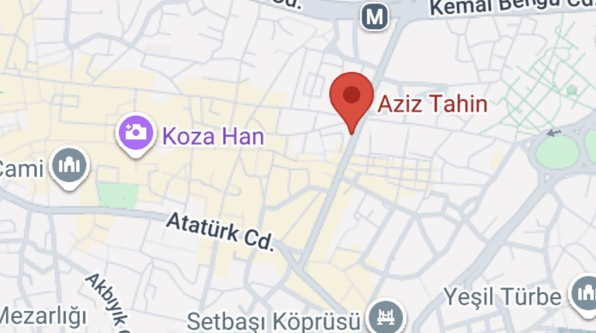
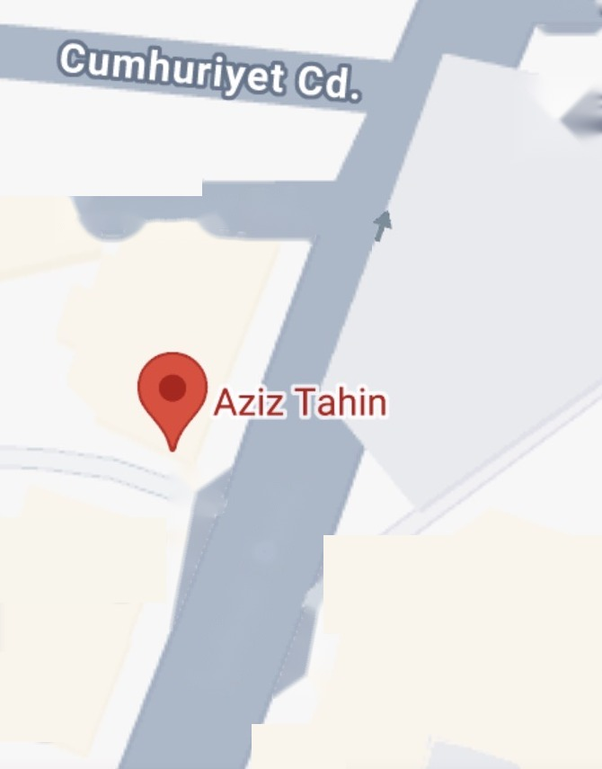

Harita: Google
…ve bu hızla Bursa'ya,
Aziz Tahin'e inersiniz!

Harita: Google
Cumhuriyet Caddesi'nin girişi,
tarihi Yiğit Köhne Camii'nin
karşısındayız
Taş değirmende,
yalnızca susamdan
AZİZ TAHİN
Bursa'dan, taş değirmenden.
SİPARİŞ İÇİN
DM'DEN YAZIN
Türkiye'nin her iline gönderim
@aziz.tahin